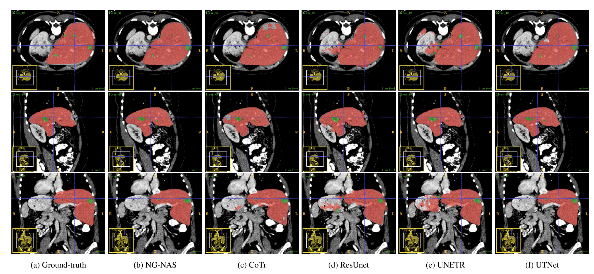
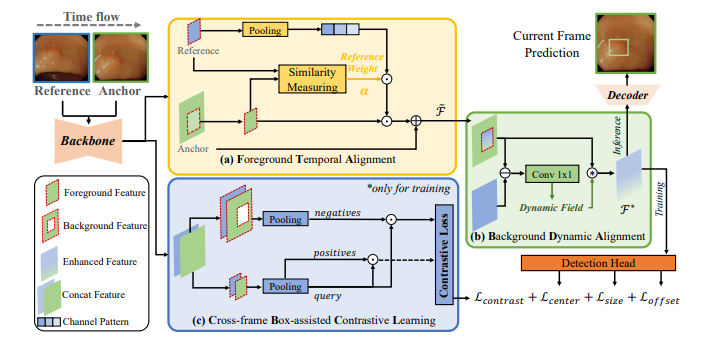
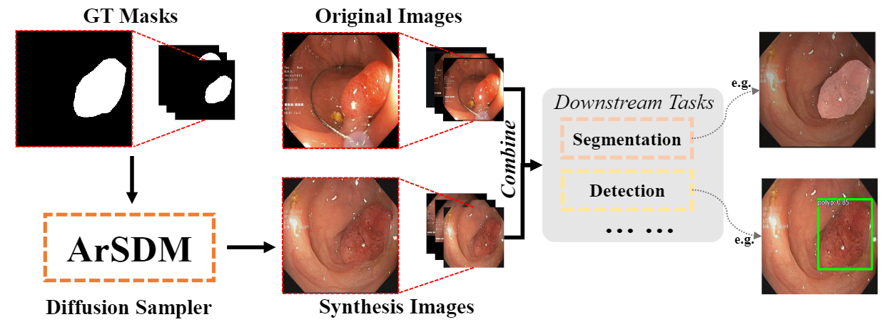
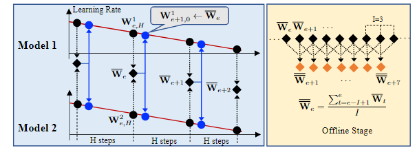
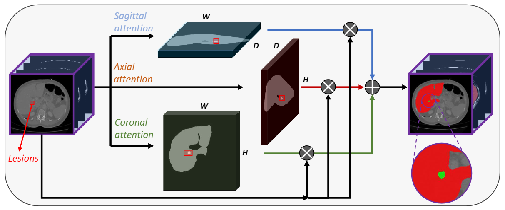

Yuncheng Jiang (蒋云丞)Ph.D. Candidate Deepbit Lab
|
 |


Biography
I am a Ph.D. candidate in Deep Bit Lab at the Chinese University of Hong Kong (Shenzhen), supervised by Prof. Zhen Li . Before that, I received my B.S. degree from the School of physics, University of Electronic Science and Technology of China (UESTC).
My research interests include Medical Image Analysis and Video Understanding. Specifically, I focus on using Deep Learning techniques to solve supervised medical image segmentation and detection tasks. Besides, I am also working on surgical video processing, and medical video content understanding tasks.
News
- [2023.11] One paper got accepted by IEEE J-BHI!
- [2023.06] One paper got accepted by CMIG!
- [2023.05] Two papers got accepted by MICCAI 2023!
- [2022.01] One paper got accepted by TNNLS.
- [2022.09] One paper got accepted by ACCV 2022.
Publications
|  |
NG-NAS: Node growth neural architecture search for 3D medical image segmentation
Shixi Qin*, Zixun Zhang*, Yuncheng Jiang, Shuguang Cui, Shenghui Cheng, Zhen Li.
Computerized Medical Imaging and Graphics (CMIG), 2023.
[paper] |
|
NG-NAS: Node growth neural architecture search for 3D medical image segmentation
Shixi Qin*, Zixun Zhang*, Yuncheng Jiang, Shuguang Cui, Shenghui Cheng, Zhen Li.
Computerized Medical Imaging and Graphics (CMIG), 2023.
[paper] |
|
|  |
YONA: You Only Need One Adjacent Reference-frame for Accurate and Fast Video Polyp Detection
Yuncheng Jiang*, Zixun Zhang*, Ruimao Zhang, Guanbin Li, Shuguang Cui, and Zhen Li.
International Conference on Medical Image Computing and Computer Assisted Intervention (MICCAI), 2023.
[paper] |
|  | ArSDM: Colonoscopy Images Synthesis with Adaptive Refinement Semantic Diffusion Models. Yuhao Du*, Yuncheng Jiang*, Shuangyi Tan, Xusheng Wu, Dou Qi, Zhen Li, Guanbin Li, and Xiang Wan. International Conference on Medical Image Computing and Computer Assisted Intervention (MICCAI), 2023.. |
|  |
Hierarchical Weight Averaging for Deep Neural Networks.
Xiaozhe Gu*, Zixun Zhang*, Yuncheng Jiang, Tao Luo, Ruimao Zhang, Shuguang Cui, Zhen Li.
IEEE Transactions on Neural Networks and Learning Systems (TNNLS).
[paper] |
|  |
APAUNet: Axis Projection Attention UNet for Small Target in 3D Medical Segmentation.
Yuncheng Jiang*, Zixun Zhang*, Shixi Qin, Yao Guo, Zhen Li, and Shuguang Cui.
Asian Conference on Computer Vision (ACCV), 2022.
[paper] |
Experience
-
Shenzhen Research Institute of Big Data (SRIBD), Shenzhen, ChinaOct. 2019 – Aug. 2020Visiting Student - I worked with Prof. Zhen Li on computer vision and medical image analysis. Specifically, I worked on attention-based CNN architecture design for small lesion segmentation in 3D CT images.
-
Shenzhen Research Institute of Big Data (SRIBD), Shenzhen, ChinaFeb. 2022 – Oct. 2022Research Intern at Medical Big Data Laboratory - I am working with Prof. Zhen Li and Prof Xiang Wan on computer vision and medical image analysis. Specifically, my focus has been on designing a deep learning-based detection system for automatic polyp detection in colonoscopy video and image.
Honors & Awards
- Ranking 4/373 in the Grand Challenge CoNIC, 2022
- Meritorious Winner of American College Students Mathematical Mode, University of Electronic Science and Technology of China, 2019
- Outstanding Student Award, University of Electronic Science and Technology of China, 2018
- National Scholarship, University of Electronic Science and Technology of China, 2017
Professional Activities
-
Memberships:
MICCAI Student, IEEE Student -
Paper Reviews:
MICCAI, ACCV -
Teaching Assistant:
- 2020-2021 Fall CSC4008 Techniques for Data Mining - 2021-2022 Spring&Fall MAT2040 Linear Algebra - 2021-2022 Summer EIE4512 Digital Image Processing - 2022-2023 Spring MAT2040 Linear Algebra - 2022-2023 Summer EIE4512 Digital Image Processing